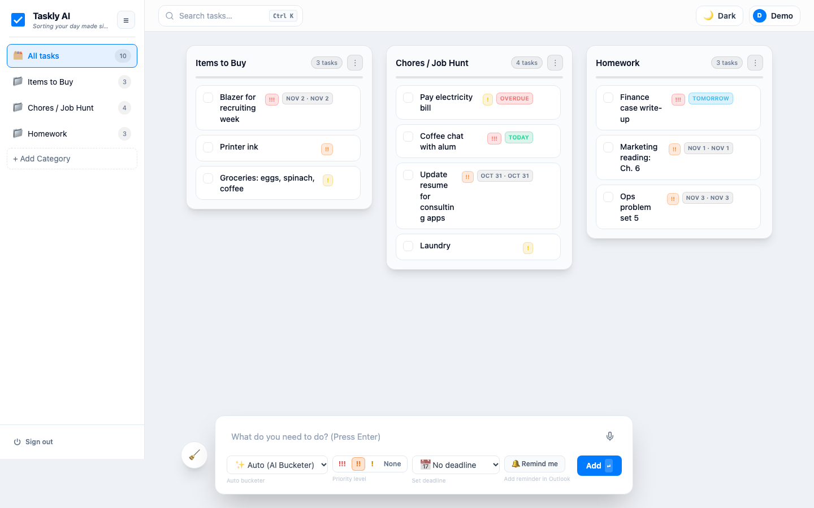

Sorting your day, made effortlessly simple.
Taskly AI automatically categorizes, prioritizes, and schedules your daily to-dos into a clean, distraction-free board.
Taskly AI automatically categorizes, prioritizes, and schedules your daily to-dos into a clean, distraction-free board.
Voice and text quick-add dock for capturing tasks in seconds — no forms, no friction.
Automatically organizes tasks into category columns with priority and deadline tags.
Symmetrical, centered board layout that adapts to your workload — nothing piles up.
Problem found through research → solution built → product evaluated → changes tested → improvements shipped.
01 · The Problem
students in our MBA batch said they struggle with managing their tasks.
Source: our batch survey (n = 100).
Assignments with different deadlines across several courses.
Group projects that depend on other people's schedules.
Recruiting: applications, coffee chats and interview prep.
Daily life: bills, errands and things to buy.
Team's qualitative assessment, not a survey statistic.
MBA students lose track of tasks because capturing, sorting and prioritizing them across school, recruiting and life takes more effort than they have time for.
If adding a task takes one sentence, and the app files, prioritizes and dates it automatically, students will keep everything in one place and miss fewer deadlines.
02 · The Solution
One sentence in, a sorted board out. Type or say a task, and Taskly picks the column, priority, deadline and reminder.

Problem: logging a task takes too long. Fix: one sentence like “finance case tomorrow 5pm”, typed or spoken.
Problem: school, recruiting and life tasks get mixed up. Fix: every task is filed into the right column automatically.
Problem: deadlines slip. Fix: !!! / !! / ! tags, Today / Tomorrow / Overdue badges, and calendar reminders.
Problem: tasks are hard to find again. Fix: search across titles, notes and columns.
Problem: every student organizes differently. Fix: rename or add columns; drag cards between them.
Problem: long lists feel overwhelming. Fix: finished tasks animate into an archive that clears itself.
03 · Evaluation, A/B Testing & Iterations
Version A (the original code, kept unchanged) and version B (the new code) ran on the same labeled examples: search queries with the tasks they should find, task phrases with the right column, and spoken sentences with the correct title, priority, date and time. Because the team that wrote B also wrote the first test set, a second, held-out set was written independently, without seeing the new code. The held-out results below are the honest ones.
| Held-out test (measured) | A · before | B · after |
|---|---|---|
| Search: queries with exactly the right results | 13 / 21 | 21 / 21 |
| Search: share of relevant tasks found (recall) | 51.6% | 100% |
| Offline bucketing: right column | 24 / 49 (49%) | 33 / 49 (67%) |
| · default columns | 17 / 23 | 22 / 23 |
| · custom-named columns | 7 / 26 | 11 / 26 |
| Voice: sentences parsed fully correctly | 26 / 43 | 40 / 43 |
| · due date / reminder time correct | 34 / 31 of 43 | 41 / 41 of 43 |
| API end-to-end checks | — | 20 / 20 pass |
On the team's own (tuning) set, B scored 27/27, 58/58 and 38/38. Those numbers are inflated by design, so they aren't headlined. All results are reproducible with npm test. Full details are in the Evals tab.
On tests written without seeing the new code, search finds every relevant task (recall 52% → 100%) and the right number of results for every query (13 → 21 of 21). Offline filing is right more often (49% → 67%), and spoken tasks come out fully correct 40 times in 43 instead of 26. Students' data is no longer exposed by the server.
Limits: this is an offline benchmark on labeled examples, not a test with live users. Whether students actually miss fewer deadlines is still a hypothesis to test next with the batch.
Thirteen evals across accuracy, reliability and safety: what each one checks, what it found, and how we fixed it.
01 · Method
An exact copy of the old code (A) runs next to the new code (B) on identical inputs.
Each example states what a person would expect: the right tasks, column, date or time.
A second set written without seeing the new code, so B can't be tuned to pass it.
The test run fails if B is worse than A on any metric, so a change can't quietly make things worse.
02 · Scorecard
| Eval | Question | How | Result (measured) | Status |
|---|---|---|---|---|
| Search relevance | Does search find what the student meant? | 21 held-out queries with the correct tasks | Exact results 13 → 21 of 21; recall 52% → 100%; precision 100% both | Improved |
| Offline bucketing | Without AI, is a task filed in the right column? | 49 held-out tasks across 3 column sets | 49% → 67% correct | Improved |
| Voice / quick-add parsing | Are title, priority, date and time pulled out correctly? | 43 held-out spoken sentences, clock frozen | Fully correct 26 → 40 of 43 | Improved |
| Several tasks in one message | Does a pasted or dictated list become the right separate tasks? | 47 held-out messages (36 lists, 11 single tasks), 107 tasks | Split right 11 → 47 of 47; fully right 4 → 38 of 47; dates, times, priorities 100%; column 90% | Improved |
| AI bucketing: prompt A vs B | Does the rewritten Gemini prompt file tasks better? | Same 49 tasks sent to Gemini with each prompt | Running… | Pending |
| AI vs offline parser | How much does Gemini add over the offline parser? | Same 43 sentences sent to Gemini | Running… | Pending |
| API end-to-end | Do sign-up, login, saving and AI endpoints behave? | 22 scripted checks on a scratch database | All 19 non-AI checks pass. The 3 live AI checks passed earlier but were blocked by the Gemini quota on the latest run (list mode not yet confirmed live) | Pass |
| Data privacy | Can anyone download private files? | Request the database, secrets file and server code by URL | Before: database downloadable. After: all blocked | Fixed |
| Robustness (fuzz) | Does odd input crash anything? | 5,000 random inputs: emoji, 10k-char text, symbols | 0 crashes, 0 malformed outputs | Pass |
| Impossible dates | Is “2/30” rejected rather than moved to March 2? | 5 impossible dates | Before: 4 of 5 became the wrong real date. After: 5 / 5 rejected | Fixed |
| Search noise | Does typing one letter flood the board? | 1–2 letter queries on 18 tasks | “a” matched 15 of 18 → 6 of 18 | Fixed |
| Scale | Is saving still fast for a huge board? | Save and load 100 / 1,000 / 5,000 tasks | 5,000 tasks: 164 ms save, 1.2 MB sent on every edit | Watch |
| Two devices at once | If laptop and phone both edit, are both changes kept? | Two sessions each add one task | One task is lost: the last save overwrites the board | Open |
Accuracy rows use the held-out set. Commands: npm test, node bench/robustness.js, node bench/ab.js --holdout --gemini.
03 · What we found and how we solved it
Evidence: “report q3” and “groceries” returned nothing; 8 of 21 queries were wrong.
Fix: match each word separately, in any order, across title, notes and column. One-letter words must start a word.
Evidence: custom columns got 7 of 26 right; “bread” went to Homework because it contains “read”.
Fix: whole-word matching, keyword groups linked to column names, and learning from tasks already in each column.
Evidence: the parser was never called; it also missed “at 4”, read 3/12 as Dec 3, and turned “2/30” into March 2.
Fix: wired it in as the offline fallback; added US dates, “noon”, bare hours, and rejection of impossible dates.
Evidence: opening /taskly.db downloaded the database, including password hashes and login tokens.
Fix: the server now only serves the page and its own asset folders.
Evidence: a slow reply for old text could overwrite the suggestion for newer text. The API quota also ran out mid-test.
Fix: stale replies are dropped, repeats are cached, and the offline parser fills in whenever AI fails.
Evidence: only 11 of 47 messages ended up as the right tasks; the dock was one line, so pasted lists lost their line breaks.
Fix: split on lines, bullets, “;”, commas, “then” and “also” (never “and”), carry “Homework:” / “tomorrow:” headers to each item, preview each task before adding, and check the whole list with one AI call.
The held-out set exposed three date gaps (years, “oct 2”, “1-20”) that were then fixed, and MBA words were added later (“coffee chat”, “alum”, “finance”), so 38/47 is partly informed by that set. The first, fully blind run scored 31/47.
Evidence: laptop and phone each added a task; only the phone's survived.
Planned fix: save individual changes with a version number, and reload instead of overwriting when the board changed elsewhere.
04 · Not yet covered
Every result above is offline. The survey's question, whether students manage tasks better, needs real use: time to add a task, share of tasks AI files correctly in daily use, missed deadlines over two weeks compared with how they work today, and a short usability score (SUS).
Tests start from text. How well the browser turns speech into text (accents, noisy rooms, Safari vs Chrome) is unmeasured.
No WCAG audit yet: keyboard-only use, screen readers, color contrast of the priority badges.
Task text that tries to instruct the AI, AI cost per student per month, and behavior under the free-tier rate limit at class scale.